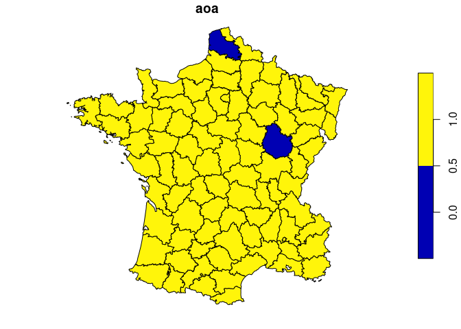

“Waywiser” is an old-timey name for a surveyor’s wheel, a device that makes measuring long distances easier than with measurement tools like a ruler or yardstick. The waywiser R package makes it easier to measure the performance of models fit to 2D spatial data by implementing a number of well-established assessment methods in a consistent, ergonomic toolbox; features include new yardstick metrics for measuring agreement and spatial autocorrelation, functions to assess model predictions across multiple scales, and methods to calculate the area of applicability of a model.
Installation
You can install waywiser from CRAN via:
install.packages("waywiser")You can install the development version of waywiser from GitHub with:
# install.packages("remotes")
remotes::install_github("ropensci/waywiser")
# or, equivalently:
install.packages("waywiser", repos = "https://ropensci.r-universe.dev")Example
Let’s say that we fit a linear model predicting crimes against people as a function of literacy, using the guerry data included in waywiser:
library(waywiser)
set.seed(123)
split_idx <- sample(seq_len(nrow(guerry)), nrow(guerry) * 0.8)
guerry_train <- guerry[split_idx, ]
guerry_test <- guerry[-split_idx, ]
crime_model <- lm(Crm_prs ~ Litercy, guerry_train)We want to assess this model, to better understand how well it predicts crime rates across 1830s France. One method to do so is to evaluate our predictions at multiple levels of aggregation, as suggested by Riemann et al. (2010) (<doi: 10.1016/j.rse.2010.05.010>). This approach is focused on aggregating point predictions, so we’ll convert our data to points and then see how well our predictions perform when aggregated to two different scales:
guerry_points <- data.frame(
truth = guerry$Crm_prs,
estimate = predict(crime_model, guerry),
geometry = sf::st_centroid(sf::st_geometry(guerry))
)
guerry_points <- sf::st_as_sf(guerry_points)
guerry_multi_scale <- ww_multi_scale(
guerry_points,
truth,
estimate,
n = list(c(5, 5), c(2, 2))
)
guerry_multi_scale
#> # A tibble: 4 × 6
#> .metric .estimator .estimate .grid_args .grid .notes
#> <chr> <chr> <dbl> <list> <list> <list>
#> 1 rmse standard 4893. <tibble [1 × 1]> <sf [25 × 5]> <tibble [0 × 2]>
#> 2 mae standard 4393. <tibble [1 × 1]> <sf [25 × 5]> <tibble [0 × 2]>
#> 3 rmse standard 3207. <tibble [1 × 1]> <sf [4 × 5]> <tibble [0 × 2]>
#> 4 mae standard 3172. <tibble [1 × 1]> <sf [4 × 5]> <tibble [0 × 2]>More information about multi-scale assessment is included in vignette("multi-scale-assessment", package = "waywiser").
We could also assess the spatial dependence of our model residuals, to identify any potential “hot spots” where our model is consistently less accurate than we’d expect by chance:
guerry_predicted <- guerry
guerry_predicted$predictions <- predict(crime_model, guerry)
ww_local_moran_i(guerry_predicted, Crm_prs, predictions)
#> # A tibble: 85 × 3
#> .metric .estimator .estimate
#> <chr> <chr> <dbl>
#> 1 local_moran_i standard 0.548
#> 2 local_moran_i standard 0.943
#> 3 local_moran_i standard 0.636
#> 4 local_moran_i standard 0.700
#> 5 local_moran_i standard 0.137
#> 6 local_moran_i standard 0.917
#> 7 local_moran_i standard 0.900
#> 8 local_moran_i standard 1.79
#> 9 local_moran_i standard 0.0208
#> 10 local_moran_i standard 0.750
#> # ℹ 75 more rowsMore information about multi-scale assessment is included in vignette("residual-autocorrelation", package = "waywiser").
Lastly, we can also see if there’s any areas in our data that are too different from our training data for us to safely predict on, which fall outside the “area of applicability” defined by Meyer and Pebesma (2021) (<doi: 10.1111/2041-210X.13650>):
crime_model_aoa <- ww_area_of_applicability(
Crm_prs ~ Litercy,
guerry_train,
guerry_test,
importance = vip::vi_model(crime_model)
)
#> Warning: The AOA threshold was 0, which is usually unexpected.
#> ℹ Did you accidentally pass the same data as testing and training?
guerry_aoa <- cbind(
guerry,
predict(crime_model_aoa, guerry)
)
plot(guerry_aoa["aoa"])
We can see that two areas are outside our model’s area of applicability, meaning that we probably can’t trust our model when extrapolating into those regions!
For more information, check out the documentation website!
Citing waywiser
To cite waywiser in publications please use:
Mahoney M. J. (2023). waywiser: Ergonomic Methods for Assessing Spatial Models. arXiv:2303.11312 [cs.MS]. https://doi.org/10.48550/arXiv.2303.11312
A BibTeX entry for LaTeX users is
@Misc{,
title = {waywiser: Ergonomic Methods for Assessing Spatial Models},
author = {Michael J Mahoney},
year = {2023},
eprint = {2303.11312},
archiveprefix = {arXiv},
primaryclass = {cs.MS},
doi = {10.48550/arXiv.2303.11312},
url = {https://arxiv.org/abs/2303.11312},
}See citation("waywiser") for the most up-to-date citation information.
Contributing
Please note that this package is released with a Contributor Code of Conduct. By contributing to this project, you agree to abide by its terms.
If you think you have encountered a bug, please submit an issue.
Please include a reprex (a minimal, reproducible example) to clearly communicate about your code.